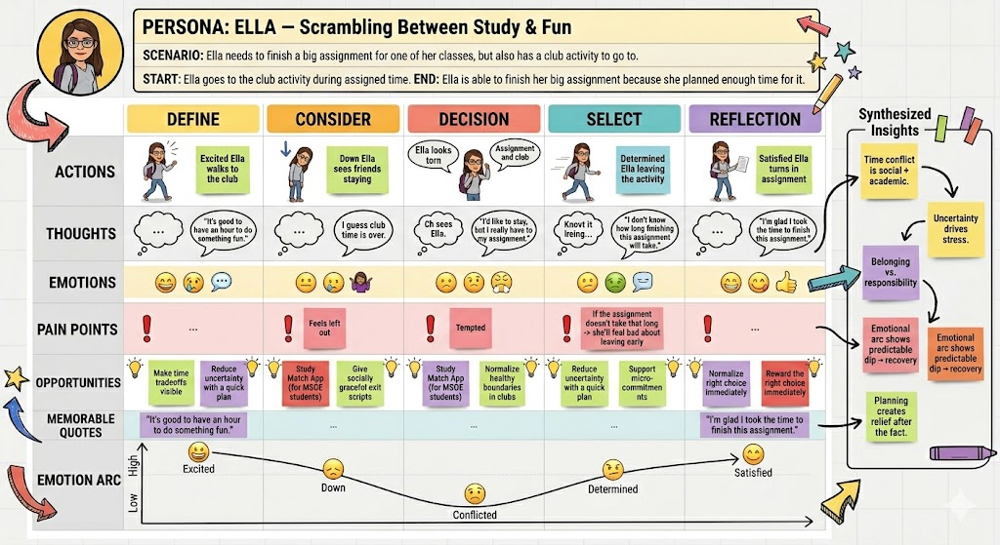
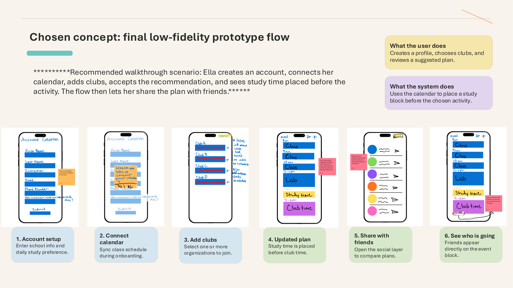

Project Overview
Designed for the In-Between
Booked & Busy is a UX group project focused on helping college students manage the space between academic responsibilities and campus involvement. The app helps students organize classes, clubs, study blocks, and social plans in one place.
Our concept was shaped by research on academic burnout, student time pressure, and the emotional stress that happens when students want to stay involved but also need to protect their academic performance.
Project Type
UX research, UX design, low-fidelity prototyping, and case study development
Target Users
Busy college students balancing coursework, clubs, social life, and study time
Tools / Methods
Interviews, affinity mapping, persona creation, journey mapping, wireframes, prototype testing
Problem
Students are trying to balance productivity and involvement, but their tools are disconnected.
Students often manage classes, clubs, study time, and personal commitments across separate tools or through memory alone. This creates schedule conflicts, missed planning opportunities, and stress when academic responsibilities compete with campus involvement.
- Students experience workload spikes around deadlines and exams.
- Clubs and extracurriculars can feel difficult to balance with academics.
- Students may sacrifice sleep or downtime to stay involved.
- Planning support must feel easy and low-effort, not like another task.
Role
My contribution
This was a group project between Arianna Nunez, Cecilia Bilski, and Alexander Clarke. My role included supporting research synthesis, persona development, ideation, and the connection between student pain points and app features.
- Contributed to interview planning and research discussion
- Helped synthesize student experiences through affinity mapping
- Supported persona and journey map development
- Helped define the app’s core features and user flow
- Contributed to prototype planning and case study writing
Case Study
Process
1. Research and affinity mapping
We began by exploring academic burnout and student time management. Our research pointed toward recurring issues such as academic overload, mental and emotional strain, sleep disruption, and awareness gaps around support systems.
We used affinity diagramming to organize patterns from student experiences and identify the strongest opportunity areas for our design.

2. Persona development
Our design centered around Ella, a student who wants to stay involved in clubs while keeping up with assignments and exams. Ella represents students who care about both academics and social connection but struggle when time conflicts appear.

Ella’s goal
Stay active in clubs while maintaining academic performance.
Ella’s pain point
Feeling conflicted when schoolwork and social plans compete for the same time.
Design implication
The app should protect study time while still supporting campus involvement.
3. Design direction
Based on our research, we focused on a scheduling app that combines academic and social planning. Instead of forcing students to choose between productivity and involvement, the app helps them see tradeoffs earlier and plan around them.
- Account creation and onboarding
- Calendar or email integration
- Daily schedule view
- Club discovery and selection
- Automatic study-time insertion before activities
- Schedule sharing with friends
4. Prototype flow
The prototype focuses on a first-time user flow. The student creates an account, connects a calendar, views their schedule, adds clubs, and receives a study block before club time.


5. Testing and feedback
User feedback showed that the overall idea was useful, especially the ability to connect a calendar and view study time next to clubs. However, the prototype also needed clearer feedback and stronger editing controls.
- Calendar connection was useful but needed clearer permission wording.
- Club selection needed stronger confirmation after submission.
- Generated study time needed a more obvious edit option.
- Users expected the dashboard to appear quickly after onboarding.
Outcome
A planning tool that supports both structure and flexibility
The final concept helps students plan earlier, reduce uncertainty, and balance schoolwork with meaningful campus involvement. The strongest direction was not just a calendar, but a decision-support tool that makes academic and social tradeoffs easier to see.
Clearer planning
Classes, clubs, and study time appear in one schedule.
Less uncertainty
Study blocks are suggested before activities instead of after stress builds.
Social balance
Students can stay connected while still protecting academic time.
Reflection
Weekly reflection
What was your biggest challenge this week?
My biggest challenge was turning all of our research, diagrams, sketches, and prototype work into one clear case study. The project had many parts, so I focused on making the story easy to follow from problem to research, design direction, prototype, and outcome.
What are you planning to improve or polish next?
Next, I plan to improve the visual polish of the site, add stronger captions to the images, and continue refining the case study so the connection between research findings and design decisions is even clearer.
What feedback would you like?
I would like feedback on whether the case study clearly explains how our research influenced the app features and whether the site feels aligned with a hybrid UX and technical portfolio direction.
Team
Team 4
Arianna Nunez
Cecilia Bilski
Alexander Clarke
This project was created for UXD as a working case study milestone focused on portfolio development, research communication, and early site publishing.